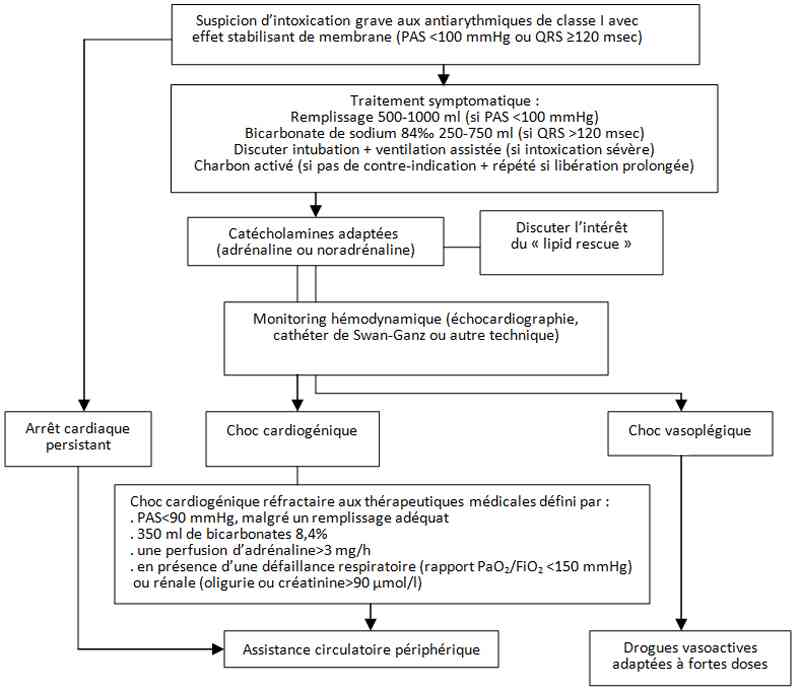

Bienvenue Sur Medical Education
Intoxication : anti-arythmiques de classe 1
Spécialité : toxicologie /
Points importants
-
Les anti-arythmiques de classe I, prescrits dans le traitement des arythmies ventriculaires ou supraventriculaires, sont des inhibiteurs du canal sodique avec effet stabilisant de membrane
-
Intoxication peu fréquente (environ 0,1% des intoxications et 3% des intoxications par cardiotropes) mais associée à une mortalité élevée (10-15%)
-
Toxicité d'expression rapide (30-120 min après l'ingestion) ne débutant qu'exceptionnellement au-delà des 6 h
-
Signes cardiovasculaires au premier plan : bradycardie, HoTA, choc, arrêt cardiaque...
-
Toute intoxication impose une admission en urgence en réanimation pour monitorage cardiovasculaire rapproché et prise en charge adaptée
Facteurs pronostiques
- Mortalité élevée
-
Facteurs de mauvais pronostic :
- dose ingérée élevée
- co-ingestion de plusieurs cardiotropes
- cardiopathie sous-jacente
- insuffisance rénale
- hypoxémie
- acidose
-
anomalies ioniques dont dyskaliémie :
- NB : L'hypokaliémie favorise les torsades de pointe, alors même qu'elle pourrait protéger des effets délétères sur la conduction et la contractilité.
- L'hyperkaliémie a un effet néfaste synergique sur les troubles de contractilité myocardique. La mesure de la concentration plasmatique est utile, même si elle n'est pas toujours corrélée à la sévérité. Elle ne doit à aucun moment retarder la mise en place des traitements symptomatiques utiles au patient
Causes de décès
-
Par complication précoce, d'origine cardiovasculaires, survenant dans les 24 h :
- asystole réfractaire, éventuellement précédée d'épisodes de troubles du rythme ventriculaire devenant de moins en moins sensibles au traitement
- troubles du rythme ventriculaire malins à type de tachycardie ou fibrillation ventriculaire réfractaire
- état de choc réfractaire principalement cardiogénique mais toujours avec une composante vasoplégique ; l'état de choc précède le plus souvent ou est contemporain des troubles du rythme et de la conduction
- Par complication tardive, survenant au-delà de 48 h et en rapport avec une réanimation prolongée: encéphalopathie post-anoxique évoluant vers un état végétatif, infections nosocomiales, embolie pulmonaire…
Présentation clinique / CIMU
SIGNES FONCTIONNELS
Troubles neurologiques
- Tremblements, agitation, fatigue et faiblesse générale
- Confusion, obnubilation, coma, convulsions
- Vision floue, hypoacousie
Troubles cardio-circulatoires
- Tachycardie, bradycardie
- Lipothymie, palpitations, douleur thoracique, malaise
- Arrêt cardiaque
Troubles respiratoires
- Polypnée, dyspnée, détresse respiratoire
Troubles abdominaux
- Douleurs abdominales, vomissements
CONTEXTE
Terrain
- Sujet dépressif
- Cardiopathie sous-jacente
Traitement usuel
- Anti-arythmique de classe I
Antécédents
- Dépression
- Tentative de suicide
- Cardiopathie chronique, troubles du rythme ventriculaire ou supraventriculaire
Facteurs de risque
- Sévérité de la cardiopathie
- Intoxication associant plusieurs cardiotropes
Circonstances de survenue
- Tentative de suicide par ingestion le plus souvent
- Accident lors d'erreur de prescription ou d'administration
- Surdosage en cas d'insuffisance rénale
EXAMEN CLINIQUE
Toxicité d'expression rapide dans les 6 h suivant l'ingestion
- Symptômes cardiovasculaires : bradycardie, hypotension, choc, arrêt cardiaque
- Symptômes neurologiques : confusion, agitation, tremblements, convulsion, syndrome pyramidal, coma (bas débit cérébral), troubles neurosensoriels avec quinidine et lidocaïne à type d'amaurose, vision floue, hallucinations, vertiges, hypoacousie
- Autres symptômes : oligurie, asthénie, troubles digestifs
EXAMENS PARACLINIQUES SIMPLES
- ECG
- Ionogramme sanguin, créatininémie, transaminases, taux de prothrombine
- Gaz du sang artériels, lactates
CIMU
- Tri 1 ou 2 en fonction de l'atteinte des fonctions vitales
Signes paracliniques
BIOLOGIQUE
-
Gazométrie : acidose métabolique ou respiratoire, hypoxémie, hypo ou hypercapnie (hypoventilation alvéolaire, inhalation)
-
Ionogramme sanguin et créatininémie : insuffisance rénale aiguë; bicarbonates abaissés ; hypokaliémie de transfert
-
Hyperlactatémie si choc
-
Ionogramme urinaire : mécanisme de l'insuffisance rénale aiguë (nécrose tubulaire aiguë)
-
Bilan d'hémostase : baisse du taux de prothrombine, baisse des facteurs de l'hémostase, CIVD
-
Bilan hépatique : élévation des transaminases, stigmates d'insuffisance hépatique (foie de choc)
-
Enzymes cardiaques, troponine, BNP, CPK
TOXICOLOGIQUE
-
Dosage plasmatique spécifique de l'anti-arythmique (laboratoire spécialisé) : concentration plasmatique pas toujours corrélée à la sévérité
-
Pour la quinidine, l'alongement du QT apparaît pour des concentrations > 2 mg/L et la cardiotoxicité pour > 8 mg/L
-
Pour les intoxications par le disopyramide, les signes de toxicité apparaissent à partir de 9 mg/L
-
Pour la flécaïne : une concentration > 3 mg/l est prédictive du décès, en l'absence d'assistance circulatoire
AUTRES
ECG
-
Effet stabilisant de membrane : onde P aplatie voire absente, QT allongé, bloc intraventriculaire (QRS élargi > 0,12 s), bloc de branche droit, bloc auriculo-ventriculaire (rare) :
- bradycardie sinusale ou à complexe élargis
- arythmies ventriculaires (ESV, TV, torsade de pointe, FV)
- tachycardie supraventriculaire
Radiographie pulmonaire
- Œdème pulmonaire (cardiogénique ou lésionnel)
- Syndrome de détresse respiratoire aigu
- Pneumonie d'inhalation
Monitorage de l'état hémodynamique
- Systématique cas de choc
- Recours aux techniques habituelles de réanimation (échographie cardiaque, cathétérisme cardiaque droit, PICCO, Vigileo...)
- Choc hypovolémique
- Choc vasoplégique lié au blocage des canaux sodiques sur les cellules musculaires lisses des vaisseaux
- Choc cardiogénique lié à l'effet inotrope négatif induit par le blocage des canaux sodiques sur le cœur
EEG
- En cas de bas débit cérébral
Diagnostic étiologique
-
Diagnostic basé initialement sur l'anamnèse et le tableau clinique (effet stabilisant de membrane)
-
Dosage spécifique dans le plasma de la molécule d'anti-arythmique ingérée pour confirmer le diagnostic :
-
pour la quinidine, l'allongement du QT apparaît pour des concentrations > 2 mg/L et la cardiotoxicité pour > 8 mg/L
-
pour les intoxications par le disopyramide, les signes de toxicité apparaissent à partir de 9 mg/L
-
pour la flécaïne, une concentration > 3 mg/L est prédictive du décès, en l'absence d'assistance circulatoire
Diagnostic différentiel
-
Autre intoxication par un cardiotrope avec effet stabilisant de membrane :
-
anti-arythmiques de la classe I de Vaughan Williams : quinidine, lidocaïne, phénytoïne, mexilétine, cibenzoline, tocaïnide, procaïnamide, disopyramide, flécaïnide, propafénone...
-
bêtabloquants : propranolol, acébutolol, nadoxolol, pindolol, penbutolol, labétalol, métoprolol, oxprénolol
-
antidépresseurs polycycliques : amitritptyline, imipramine, clomipramine, dosulépine, maprotiline
-
antiépileptique : carbamzépine
-
neuroleptiques : phénothiazines
-
antalgiques : dextropropoxyphène
-
antipaludéens : chloroquine, quinine
-
récréatifs : cocaïne
-
Autre trouble cardiaque d'origine non toxique (trouble de conduction intra-ventriculaire ou auriculo-ventriculaire)
Traitement
TRAITEMENT PREHOSPITALIER/INTRAHOSPITALIER
- pour la quinidine, l'allongement du QT apparaît pour des concentrations > 2 mg/L et la cardiotoxicité pour > 8 mg/L
- pour les intoxications par le disopyramide, les signes de toxicité apparaissent à partir de 9 mg/L
- pour la flécaïne, une concentration > 3 mg/L est prédictive du décès, en l'absence d'assistance circulatoire
Diagnostic différentiel
-
Autre intoxication par un cardiotrope avec effet stabilisant de membrane :
- anti-arythmiques de la classe I de Vaughan Williams : quinidine, lidocaïne, phénytoïne, mexilétine, cibenzoline, tocaïnide, procaïnamide, disopyramide, flécaïnide, propafénone...
- bêtabloquants : propranolol, acébutolol, nadoxolol, pindolol, penbutolol, labétalol, métoprolol, oxprénolol
- antidépresseurs polycycliques : amitritptyline, imipramine, clomipramine, dosulépine, maprotiline
- antiépileptique : carbamzépine
- neuroleptiques : phénothiazines
- antalgiques : dextropropoxyphène
- antipaludéens : chloroquine, quinine
- récréatifs : cocaïne
- Autre trouble cardiaque d'origine non toxique (trouble de conduction intra-ventriculaire ou auriculo-ventriculaire)
Traitement
TRAITEMENT PREHOSPITALIER/INTRAHOSPITALIER
Stabilisation initiale
- Voie veineuse de bon calibre
- Intubation si troubles de la conscience ou collapsus sévère
- Remplissage prudent (maximum : 1000 mL de NaCl 0,9%)
- Atropine 0,5-1 mg IV si bradycardie sinusale ou BAV I
- Adrénaline en cas d'AC ou de choc
-
Bicarbonates de sodium molaires 8,4% avec KCl 2 g /250 mL, sans dépasser 750 mL, si HoTA + QRS élargis > 0,12 s
- objectif : réduire le bloc intra-ventriculaire
- critères d'efficacité : correction du QRS et de l'HoTA
- Magnésium si torsade de pointe (2 g en IVD à renouveler) ou ESV répétés
- Lipid rescue en cas de surdosage aux produits anesthésiques locaux responsable d'une défaillance circulatoire ou d'un arrêt cardiaque : lipides 20% (Intralipid® 20%) 1,5 mL/kg en 1 min + poursuivre le massage cardiaque externe + répéter bolus/3-5 min jusqu'à une dose totale de 3 mL/kg ; intérêt non démontré pour les autres toxiques
Suivi du traitement
- Charbon activé si vu dans les 2 h, en l'absence de contre-indications
- Charbon activé à doses répétées si intoxication par quinidine (généralement chez un sujet intubé)
- Monitorage hémodynamique : La persistance d'un collapsus malgré le remplissage initial impose de pratiquer une étude hémodynamique
- Traitement du choc (catécholamines adaptée au profil hémodynamique)
- Isoprénaline et/ou entraînement électrosystolique si bradycardie P visible ou bloc auriculo-ventriculaire de haut degré
- Compensation des pertes hydro-électrolytiques
- Correction prudente de l'hypokaliémie car pool potassique conservé: 80-160 mEq/j (4-6 g/j) sans jamais dépasser le double même pour une kaliémie < 2 mmol/L, pour éviter un risque d'arythmie ventriculaire secondaire à l'hyperkaliémie au moment de la disparition de l'effet stabilisant de membrane
- Choc électrique externe si troubles du rythme ventriculaire grave ; si récidive, la plupart des anti-arythmiques est contre-indiquée
Assistance circulatoire
- Discuter assistance circulatoire si état de choc ou AC réfractaire
- Poser l'indication avant l'apparition d'une défaillance multiviscérale
- Les modalités et indications de l'assistance circulatoire doivent encore être précisées pour les intoxications par la chloroquine (niveau de preuve C). L'assistance périphérique par pompe centrifuge à débit continu avec canulation chirurgicale fémorale est la meilleure solution. Elle doit être proposée chez tout patient intoxiqué et présentant un arrêt ou une défaillance cardiaque réfractaire aux thérapeutiques pharmacologiques.
- Il n'existe pas de seuil établi pour définir un choc réfractaire aux catécholamines. Nous avons suggéré que la présence d'une HoTA malgré une perfusion d'adrénaline > 3 mg/h en présence d'une insuffisance rénale ou d'une hypoxémie majeure, serait prédictive du décès sans traitement d'exception
MEDICAMENTS
Aucun antidote particulier - traitement symptomatique
Lipid rescue
- La perfusion de solutés lipidiques, préconisée pour traiter les effets secondaires graves des anesthésiques locaux au bloc opératoire, a été proposée comme traitement des intoxications réfractaires avec effet stabilisant de membrane
- En pratique clinique, on ne dispose d'aucune étude randomisée, mais quelques cas cliniques, confrontés aux données expérimentales, permettent de proposer un protocole de traitement qui, du fait de l'absence de toxicité aiguë des émulsions lipidiques, mérite d'être administré en association aux autres mesures de réanimation
- Cependant, les schémas de prise en charge actuellement recommandés pour les intoxications par cardiotropes ne doivent pas être modifiés
- En cas d'arrêt cardiaque avec un produit anesthésique local : lipides 20% (Intralipid® 20%) 1,5 mL/kg en 1 min + poursuivre le massage cardiaque externe + répéter bolus/3-5 min jusqu'à une dose totale de 3 mL/kg puis poursuivre perfusion jusqu'à stabilité hémodynamique, en augmentant le débit de 0,5 mL/kg/min si baisse de la pression artérielle ; la dose maximale totale est de 8 mL/kg.
- En pratique, chez un sujet de 70 kg : 100 mL IV lente puis débit continu adapté aux conditions hémodynamiques
- Mécanismes d'action hypothétique : siphon lipidique extrayant la drogue liposoluble des tissus et la séquestrant dans une phase lipidique, bénéfice métabolique favorisant la production d'ATP dans les myocytes, ou effet direct des acides gras sur le fonctionnement des canaux ioniques, notamment calciques
Surveillance
CLINIQUE
-
PA, FC, FR, SpO2, conscience, diurèse/2 h
-
Scope systématique +++
-
Paramètres de ventilation mécanique si intubé et ventilé
PARACLINIQUE
-
Ionogramme sanguin, créatininémie, urée sanguine, gazométrie, lactatémie
-
ECG
-
NFS, bilan d'hémostase (TP et facteur V), transaminases, CPK
-
Radiographie de thorax
-
Dosage spécifique de l'anti-arythmique de classe I dans le plasma (cinétique)
Devenir / orientation
CRITERES D'ADMISSION
Devenir / orientation
CRITERES D'ADMISSION
A l'UHCD
- Patient resté strictement asymptomatique au delà de 6 h après ingestion
En réanimation
- Admission systématique pour toute intoxication même asymptomatique en l'absence d'orientation initiale sur la dose ingérée ou le délai
- Admission systématique pour toute intoxication avec collapsus, anomalies ECG, trouble de vigilance
CRITERES DE SORTIE
- Patient resté asymptomatique pendant > 24 h
- Extubation si ventilation mécanique
- Patient conscient et non confus
- Régression des troubles cardiaques et normalisation de l'ECG
- Régression des défaillances d'organe (coagulation, rein et foie)
- Normalisation des concentrations plasmatiques (si dosage effectué)
- Après avis psychiatrique en cas d'intoxication volontaire
Mécanisme / description
GENERALITES SUR LES ANTI-ARYTHMIQUES
Classification des anti-arythmiques adaptée de Vaughan-Williams
-
Classe I : Bloqueurs des canaux sodiques :
- classe 1a (cinétique intermédiaire + dépression du courant potassique) : ajmaline, disopyramide, hydroxyquinidine, procaïnamide, quinidine
- classe 1b (cinétique rapide) : diphénylhydantoïne, lidocaïne, méxilétine, tocaïnide
- classe 1c (cinétique lente) : cibenzoline, encaïnide, flécaïnide, lorcaïnide, propafénone
-
Classe II : Bêtabloquants :
- avec effet stabilisant de membrane : acébutolol, labétalol, métoprolol, nadolol, oxprénolol penbutolol, pindolol, propranolol
- sans effet stabilisant de membrane : aténolol, alprénolol, bisoprolol, bucindolol, timolol, xamotérol
-
Classe III : Bloqueurs des canaux potassiques :
- brétylium, cordarone, sotalol
-
Classe IV : Inhibiteurs calciques :
- dérivés phénylalkylamine (vérapamil), dihydropyridines (nifédipine et amlodipine), benzothiazépines (diltiazem), diphénylpipérazines (mibéfradil), diarylaminopropylamine (bépridil)
Classification des mécanismes d'action des anti-arythmiques
-
Classe I :
- mécanisme d'action : diminution de l'entrée du sodium à travers les canaux sodiques rapides
-
modification du potentiel d'action :
- A. La vitesse de dépolarisation (phase 0) est diminuée. Allonge la période réfractaire efficace, prolonge la durée de la repolarisation
- B. Phase 0, la vitesse de dépolarisation est diminuée (effet moindre qu'avec le sous-groupe A). Raccourcit la repolarisation et la période réfractaire efficace
- C. Vitesse de dépolarisation (phase 0) très diminuée ; peu d'effet sur la repolarisation
-
Classe II :
- mécanisme d'action : blocage des récepteurs bêta-adrénergiques
-
modification du potentiel d'action :
- augmentation de la durée du potentiel d'action et de la période réfractaire efficace
- diminue la dépolarisation diastolique spontanée favorisée par les catécholamines
-
Classe III
- mécanisme d'action : inhibition de la sortie du potassium
- modification du potentiel d'action : augmentation de la durée du potentiel d'action, allongement de la période réfractaire efficace
-
Classe IV
- mécanisme d'action : inhibition du flux calcique au niveau des canaux lents
-
modification du potentiel d'action :
- diminution de l'automatisme en phase 4 et des postpotentiels
- dépression de la conduction
- pas de modification de la durée du potentiel d'action ni de la période réfractaire efficace
PHARMACODYNAMIE
- Inhibiteurs du canal sodique rapide avec effet stabilisant de membrane
- Effets chronotrope, inotrope et dromotrope négatifs
- Effets proarythmogènes par allongement du QT
Classe
- Classe 1a : quinidine, hydroxyquinidine, ajmaline, procaïnamide, disopyramide
- Classe 1b : lidocaïne, méxilétine, tocaïnide
- Classe 1c : encaïnide, flécaïnide, lorcaïnide, propafénone, cibenzoline
PHYSIOPATHOLOGIE
Effet stabilisant de membrane
- Le support est un blocage des canaux sodiques et potassiques entraînant une diminution du flux sodique entrant dépolarisant en phase 0 et du flux potassique sortant repolarisant en phase 3. Ces perturbations sont à l'origine du ralentissement de la vitesse de propagation de l'influx et de l'allongement de la période réfractaire.
Hypokaliémie
- Elle est liée à un mécanisme de transfert. Le rôle délétère de l'hypokaliémie est discuté. Elle pourrait aggraver les effets proarythmogènes du blocage de la conduction ventriculaire, de l'augmentation d'automaticité et de l'allongement du QT. A l'inverse, elle pourrait être protectrice, en induisant une inhibition relative de la pompe Na-K-ATPase membranaire nécessaire pour restaurer un certain degré d'inotropisme et d'excitabilité myocardique. C'est pourquoi, en raison d'une pathogénie incertaine, la correction de l'hypokaliémie même profonde doit être prudente car difficile et exposant au risque d'arythmie ventriculaire lors du transfert extracellulaire, après élimination du toxique, de l'excès de potassium apporté.
Algorithme
-
Algorithme : traitements des intoxications par anti-arythmique avec effet stabilisant de membrane
 _690 Algorithme Algorithme : traitements des intoxications par anti-arythmique avec effet stabilisant de membrane
Bibliographie
-
Clarot F, Goullé JP, Horst M, Vaz E, Lacroix C, Proust B. Fatal propafenone overdoses: case reports and a review of the literature. J Anal Toxicol 2003;27:595-9
-
Köppel C, Oberdisse U, Heinemeyer G. Clinical course and outcome in class IC antiarrhythmic overdose. J Toxicol Clin Toxicol 1990;28:433-44
-
Malinovsky JM, Mazoit JX, Sztark F, Estèbe JP, Capdevila X, Samii K, Eledjam JJ, Benhamou D, Bonnet F, Bouaziz H, Weinberg G; Le Comité douleur-anesthésie locorégionale de Sfar. Toxicité systémique des anesthésiques locaux et solutions lipidiques : une alternative supplémentaire intéressante. Ann Fr Anesth Reanim 2008;27:132-4
-
Cottrel M, Nguyen BV, Guillouët M, Deredec R, Pondaven E, L'Azou D, Arvieux CC, Gueret G. Les émulsions lipidiques dans les intoxications aux stabilisants de membrane. Réanimation 2008;17:670-5
-
Craig S. Phenytoin poisoning. Neurocrit Care 2005;3:161-70
Auteur(s) : Bruno MEGARBANE